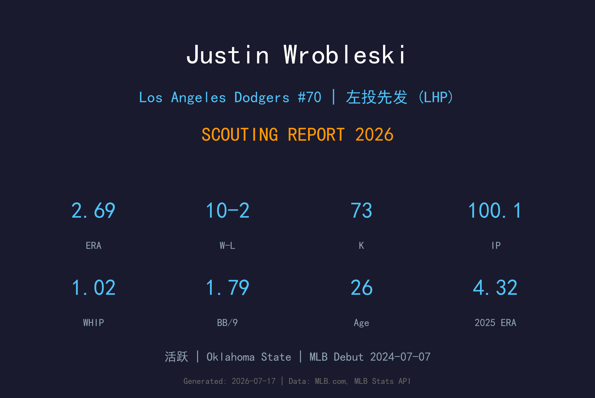
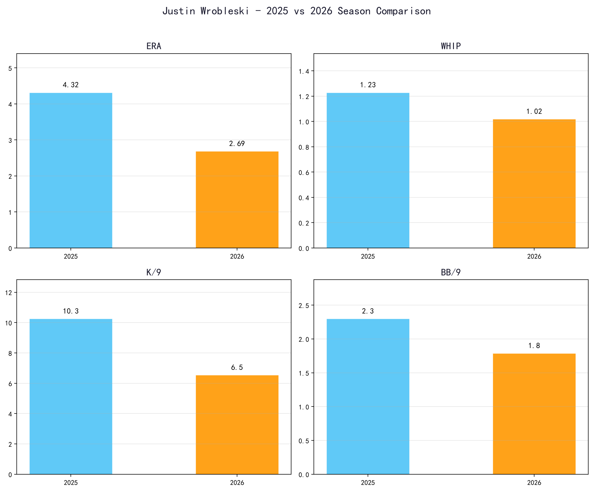
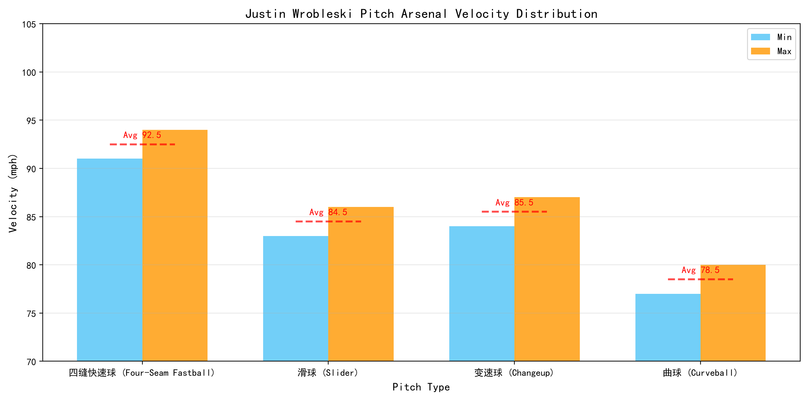
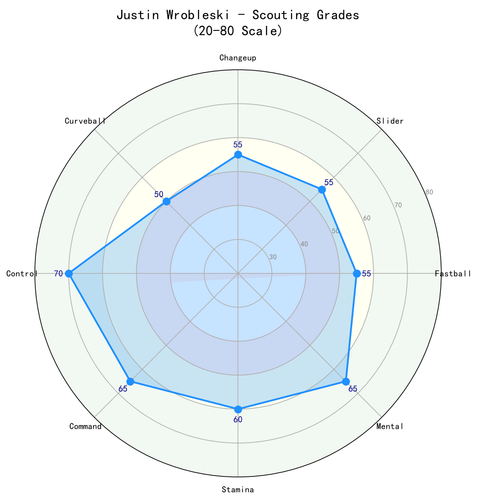

Los Angeles Dodgers #70 | 左投先发 (LHP) | 活跃

Justin Wrobleski 是道奇队近年来从低轮选秀中培养的惊喜型左投先发。2021年第11轮（总第342顺位）被道奇选中，他从小联盟一步一个脚印，在2024年完成大联盟首秀，2025年作为后援贡献世界大赛关键局数，2026年则一举进入先发轮值并缴出精英成绩。
2026年他16场出赛（15场先发）、10胜2败、ERA 2.69、WHIP 1.02，吃下100.1局。他的三振率不高（K/9 6.55），但保送率极低（BB/9 1.79），依靠精准控球和击球软弱度来压制对手。这种球风 reminiscent of 道奇传奇左投 Clayton Kershaw——而他从小就视 Kershaw 为偶像。
年仅26岁的 Wrobleski 是道奇未来轮值中最值得期待的新星之一。他的 天花板 取决于能否在保持控球的同时提升三振能力，但他的稳定性和大赛经验已经超出同龄球员。
来自 Oklahoma State，在2021年选秀第11轮（总第342顺位）被道奇摘下。低顺位起步意味着他必须在每个层级都证明自己，而他确实做到了。
在 高阶1A Great Lakes 缴出4胜4败、2.90 ERA、102.1 IP。6月1.09 ERA 获选中西部联盟月度最佳投手，并入选道奇组织全明星和联盟季后赛全明星。
7月7日对酿酒人完成大联盟首秀。虽然大联盟初体验成绩起伏（5.70 ERA），但他在9月28日对洛矶完成4局无失分救援，拿下生涯首次 save。
常规赛以牛棚为主，3.23 ERA、67 K、11 BB。世界大赛第3战18局大战中出赛1.2局无失分；第6战第7局无失分救援，前后都用三振收尾，帮助道奇夺冠。
成为道奇先发轮值固定成员，15场先发、10胜2败、ERA 2.69、WHIP 1.02、100.1 IP。从后援成功转型为先发，展现极高球商和适应能力。

📈 上图为近三年核心数据趋势。柱状图高度代表该年度表现，便于快速比较球员状态的上升或下滑。
| 赛季 | G | GS | W-L | ERA | IP | K | BB | WHIP | K/9 |
|---|---|---|---|---|---|---|---|---|---|
| 2025 | 24 | 2 | 5-5 | 4.32 | 66.2 | 76 | 17 | 1.23 | 10.26 |
| 2026 | 16 | 15 | 10-2 | 2.69 | 100.1 | 73 | 20 | 1.02 | 6.55 |

⚾ 上图为各球种球速区间（蓝=最低球速，橙=最高球速，红线=平均值）。球速差与位移差越大，打者越难锁定单一球路。
91-94 mph
Wrobleski 的控球主轴。球速不顶尖，但出手稳定、进垒点精准，经常能制造 软弱击球。他喜欢利用上角快速球抢好球数。
83-86 mph
主要出局球，具有一定的横向位移和 late break 。对付右打者时外角使用，能制造追打和滚地球。
84-87 mph
对付左打者的关键武器，速度差与快速球相近但下坠更多。用来制造滚地球和改变打者节奏。
77-80 mph
展示型球种，用来在两好球后或第三次面对打者时增加变化。仍在发展中，是未来提升三振率的关键。
Wrobleski 采用简洁、重复性高的左投机制。他的 放球点 稳定，使他的控球成为最大优势。他不追求三振，而是让打者击球——但通常是软弱击球。这种「pitch to contact」风格在现代棒球中越来越少见，但在道奇强大的防守支援下非常有效。
从2025年的后援角色转型为先发，Wrobleski 的2026年几乎完美。ERA 从4.32降至2.69，WHIP 从1.23降至1.02，IP 达到100.1。最值得注意的是他的保送率仅1.79，显示他即使在面对 打线 第三、四趟时仍能保持控球。10胜2败的战绩也反映他善于在关键局中稳住局面。
2026年K/9仅6.55，远低于2025年的10.26。这说明他作为先发时更依赖击球软弱度和防守，而非三振出局。这种打法对BABIP和防守范围较为敏感。若未来能提升曲球或滑球的三振能力，他的 天花板 将大幅提升。
Wrobleski 的成功离不开道奇强大的内野防守。他的滚地球率偏高，因此 Mookie Betts、Miguel Rojas、Max Muncy 等人的 range 和 double-play 能力对他至关重要。他也善于利用主场比赛的场地优势。
年仅26岁，Wrobleski 已经拥有世界大赛冠军经验。2025年世界大赛的关键 relief 出赛显示他在高压下不会慌乱。这种成熟度是他从后援转型先发时最大的无形资产。

2026年成功转型先发，控球 elite。若提升三振能力，有望成为道奇长期轮值的核心成员。
B+ 级 / 潜力左投先发
Justin Wrobleski 的2026年表现超出预期。他证明了自己不仅能在大联盟生存，还能作为先发稳定贡献。未来的发展关键在于：保持控球优势的同时，增加三振武器和局数耐力。
2026（下半季）：继续稳定轮值，ERA有望维持在3.00-3.30，全季160+局、12-15胜。
2027-2028：若三振能力进步，有望成为道奇3号先发，ERA 3.00-3.50，年投180局。
2029+：进入生涯巅峰，可能接近全明星讨论，并成为道奇轮值中坚力量。
Justin Michael Wrobleski 出生于伊利诺伊州霍夫曼庄园（Hoffman Estates）。他的父亲 Brad 曾是 Iowa State 的跳水运动员，母亲 Christi 则是该校的网球选手。这样的运动家庭背景让 Justin 从小就拥有出色的身体协调性和竞争意识。
他在 Oklahoma State 大学打球，并在2021年选秀第11轮被道奇选中。尽管顺位不高，但道奇的培养体系给了他充足的时间成长。他在2022年从新秀联盟起步，2023年在 高阶1A 打出突破性赛季，2024年登上大联盟，2025年成为世界冠军球队的重要后援。
Wrobleski 从小就是 Clayton Kershaw 的球迷，而如今他正在道奇队中沿着另一位传奇左投的轨迹前进。他的快速球和控球风格与巅峰末期的 Kershaw 有几分相似，虽然 原始球威 不及前者，但他的球商和稳定性弥补了很多。
场外，Wrobleski 以低调和努力著称。他的成长故事是道奇近年低轮选秀培养成功的典型案例，也让他成为球迷和教练团都寄予厚望的年轻先发。